The Mission
As part of a multidisciplinary freshman engineering team, designed and built a functional wind turbine to power a mock Mars colony. Constraints: under 9 inches tall, small motor, limited materials (wood, 3D printing).
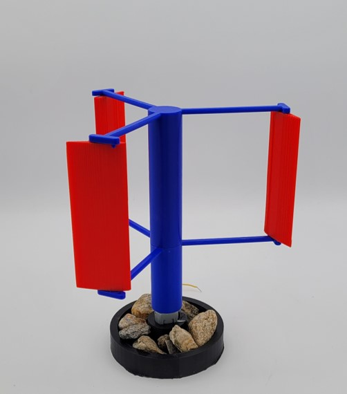
Understanding the Challenge
As a team, we developed a Gantt chart to track our progress and ensure every team member knew what to do.
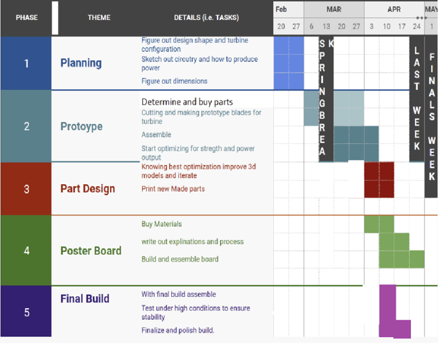
From HAWT to VAWT
Our original design was a traditional horizontal axis wind turbine. After some consideration, we opted for a Vertical Axis Wind Turbine (VAWT). VAWTs can grab wind from any direction making it useful with Mars' unpredictable gusts, and their simpler design and lower center of gravity mean greater stability, especially at this scale with the materials we were using.
After landing on a VAWT design, I worked along side a civil engineer to construct a model of our design using cardboard. This model's main purpose was to give us an understanding of dimensions and scale making it easier to model in CAD later on. Even as a rough idea, our cardboard model incorporated crucial design choices like airfoil-shaped blades and a sturdy base. It also allowed us to explore flaws and make design improvements in the final CAD model such as designing the supports of the blades to be more aerodynamic.
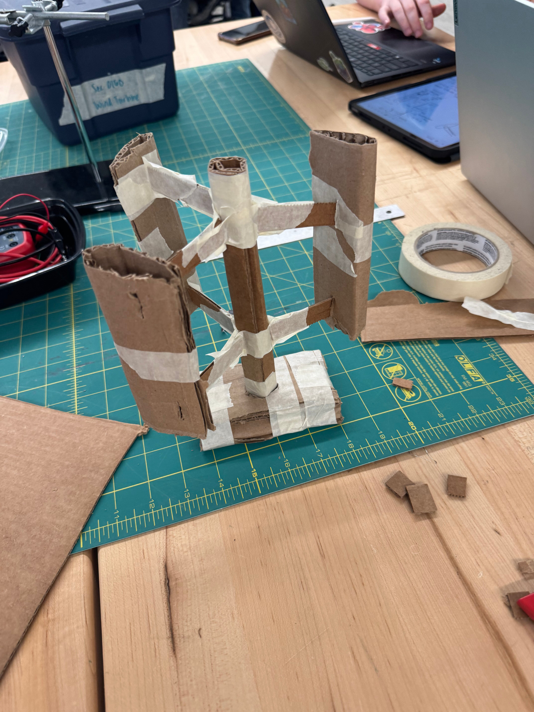
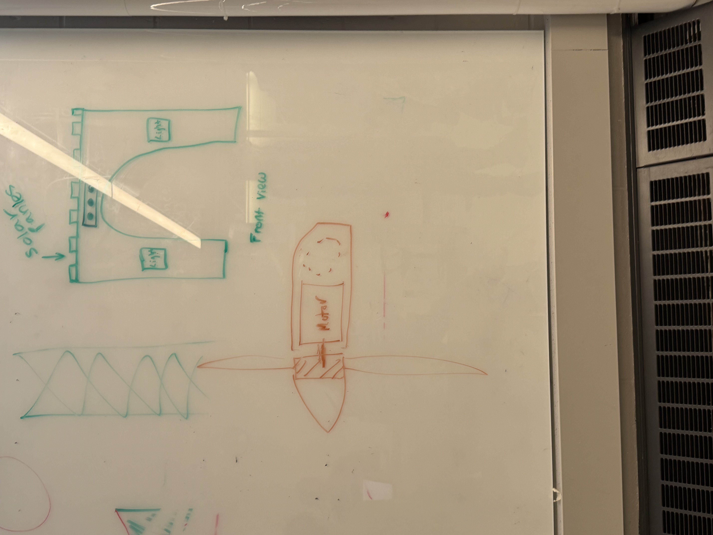
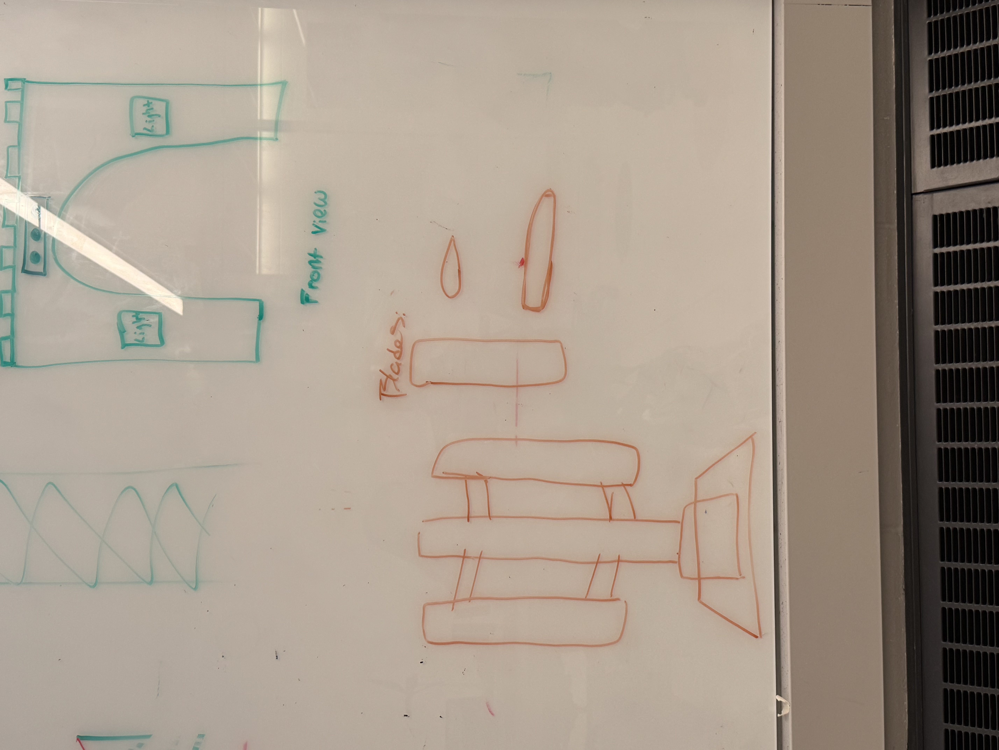
CAD & Modular Design
Following our physical prototype, another mechanical engineer and I began modeling the entire assembly in CAD. A key decision we made during this phase was to use a modular design for the turbine. This approach was critical for a few reasons: it ensured that each component was printable on a 3D printer, and it also forced us to meticulously design the interfaces between parts.
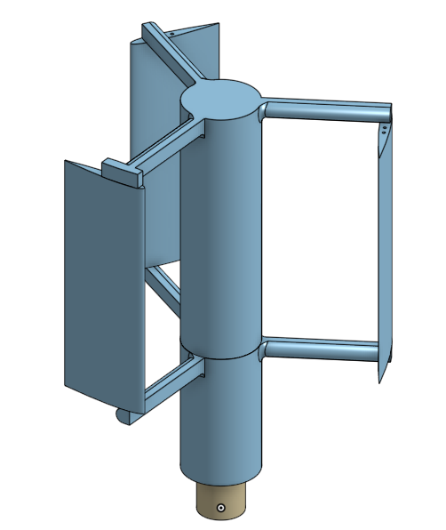
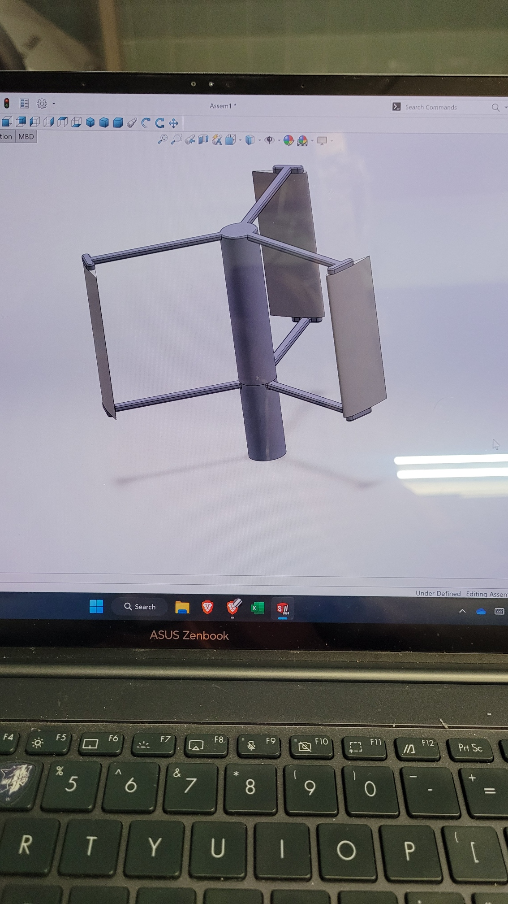
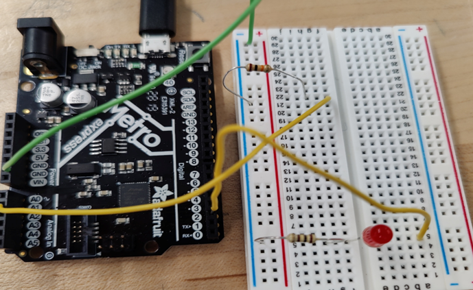
Printing & Putting It Together
With the third and final design successfully modeled we started using a 3D printer to fabricate the parts. I learned how to use slicing software and how to arrange and configure parts to make sure they print correctly and efficiently. We successfully printed our parts and started assembling them.
We used a simple wooden dowel for the central shaft which allowed our 3D-printed parts to slide on easily. The blades incorporated a snap-fit mechanism with their supports, making for a quick and secure assembly without the need for any fasteners or adhesives. This snap-fit design also gave us the ability to rotate the blades which proved invaluable during our testing phase for understanding how different angles impacted performance.
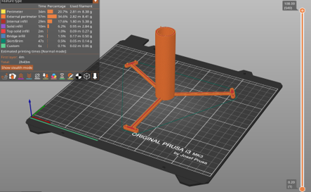
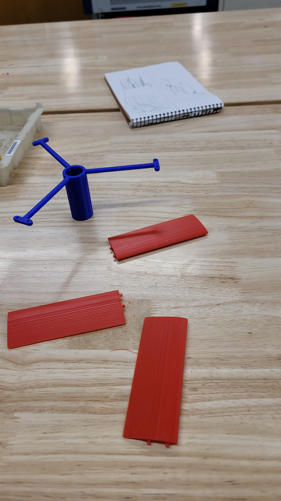
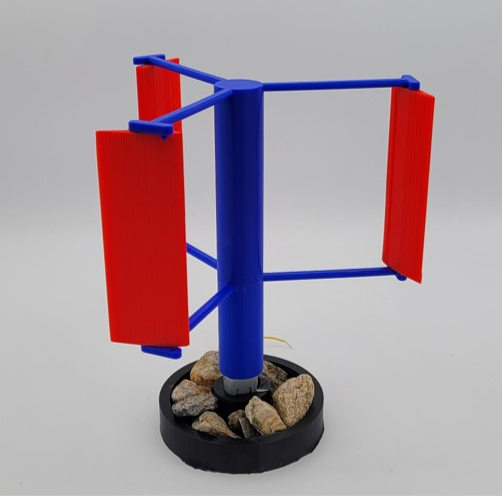
Validation & Performance
What I Learned
- Working in a multidisciplinary team, communicating progress and ideas effectively
- Prototype and iterate quickly and effectively to test ideas
- DFA and DFM
- In future iterations, I would add a bearing to the dowel for more stability.